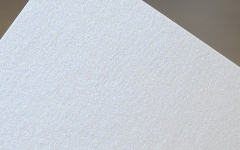

전단지
- 모니터 색상과 실제 상품과 색상 차이가 날 수 있습니다. 참고해주세요.
모조지(백색)
일반적으로 백색은 복사용지, 책의 속지, 각종 서식류
등 다양한 용도로 폭넓게 이용되고 있으며
미색은 주로 책에 많이 쓰여 서적지라고도
합니다. 면이 매끄럽고 가격이 저렴해 많이 사용되는
재질입니다.

아트지(백색)
아트지는 면이 곱고 고르며, 종이 자체에 약간의
광택이 있는 재질입니다.
가격대가 저렴하고 인쇄 색상표현이 뛰어납니다.

스노지(백색)
스노우지는 아트지와 더불어 대중적으로 많이
사용되는 인쇄용지로 종이 자체에 광택이 없어
부드러우면서 촉감이 부드럽습니다.
광택이 없는 차분한 특징과 반사율이 적어 인쇄 후
은은한 광택이 납니다.

랑데뷰(내츄럴)
자연스러움과 부드러운 감촉, 두터운 느낌의 고급
특수코팅 인쇄용지로 이미지 재현에 우수합니다.
우수한 품질의 고급 인쇄물 내지 및 표지에
적합합니다.

스타드림(크리스탈 펄지)
펄색지로 부드러운 표면과 은은한 칼라, 독특한 펄이
조화를 이루며 인쇄성이 뛰어나 화려함과
고급스러움을 표현할 수 있습니다.
빛의 각도에 따라 펄의 느낌이 달라지는 재질입니다.
-

-